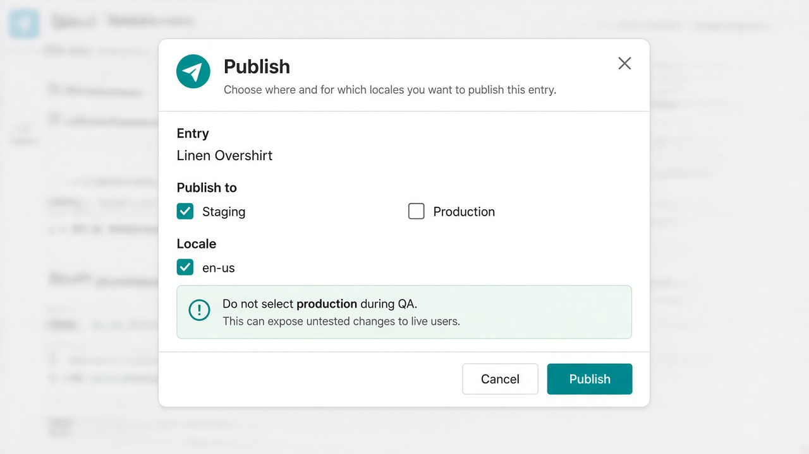
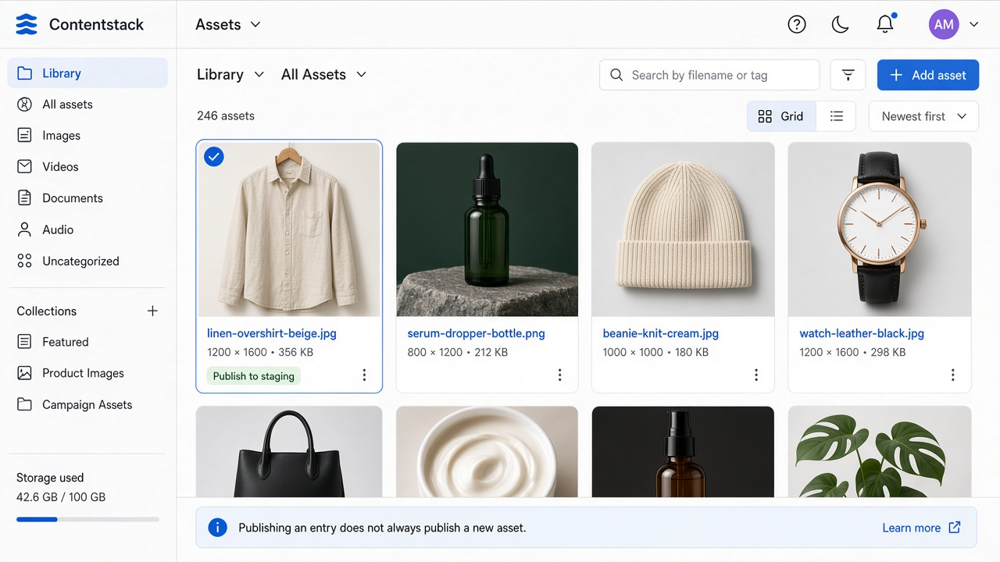

Home / Labs / 03
Lab 03 — Environments, assets, and publish
Time: 45 minutes
Layer: CMS + (light) API
Exit: Product is on staging only; production CDA does not return it.

---
1. Publish dependencies first
Order matters.
- Publish asset
hero_image(and author photo) to staging. - Publish
categoryApparel to staging (en-us). - Publish
productLinen Overshirt to staging (en-us) only.
Do not select production.
If the UI lets you select all environments, that is a role/publish-rule defect on a real project. On a personal trial you may be Admin — still uncheck production.
---
2. Prove it
Use staging token:
GET {CDA}/v3/content_types/product/entries?environment=staging&query={"slug":"linen-overshirt"}Expected: 1 entry; title contains Linen Overshirt.
Use production token:
GET {CDA}/v3/content_types/product/entries?environment=production&query={"slug":"linen-overshirt"}Expected: 0 entries.
If production returns the product, you published to production. Unpublish from production and re-test.
---
3. Version drill
- Edit title to
[QA-FIXTURE] Linen Overshirt (v2)and Save (do not publish). - Repeat staging CDA. Expected: old title still published.
- Open Live Preview or Preview API if configured — expected: v2 title.
- Publish v2 to staging. CDA now shows v2.
- In Versions, publish the previous version back to staging (rollback). CDA shows v1 title again.
---

4. Asset drill
- Replace
hero_imagewith a visually different file. - Publish the entry but not the new asset (if the UI allows).
- Note broken or old image behaviour — this is a standard defect pattern.
- Publish the new asset to staging and confirm CDA
hero_image.urlchanges or cache-busts.
---
5. Unpublish
- Unpublish the product from staging.
- Staging CDA query returns 0.
- Re-publish to staging so later labs still have data.
---
Pass
- Staging CDA hit, production miss (then restored)
- Save ≠ publish demonstrated
- Rollback via versions demonstrated
- Notes updated with current published version
---
Next: Lab 04 — Delivery API